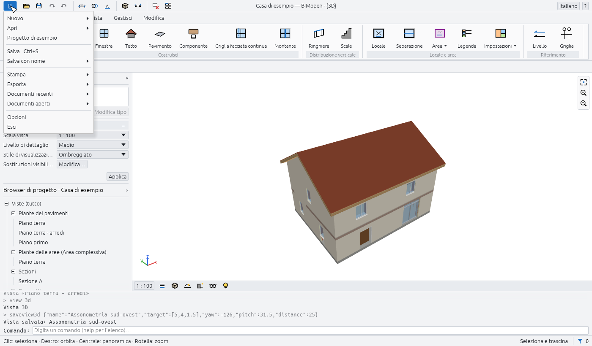
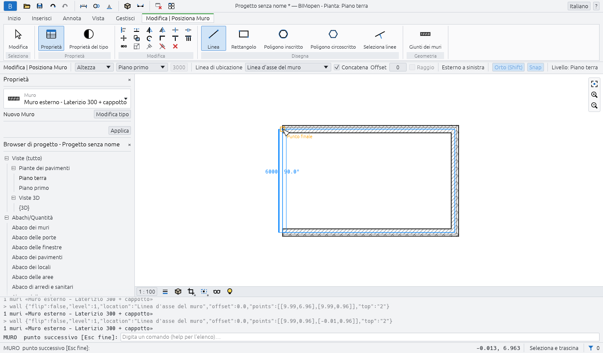
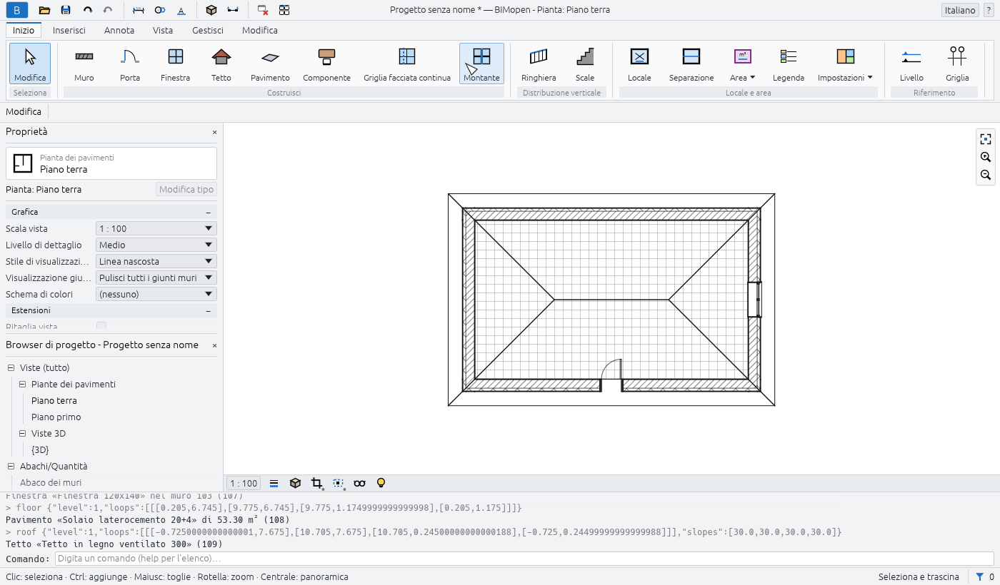
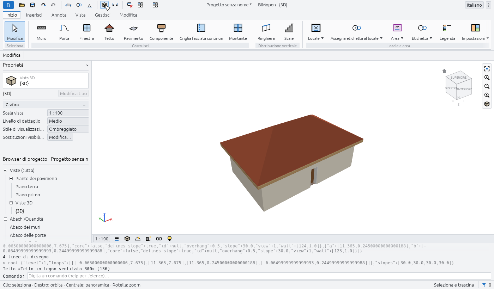
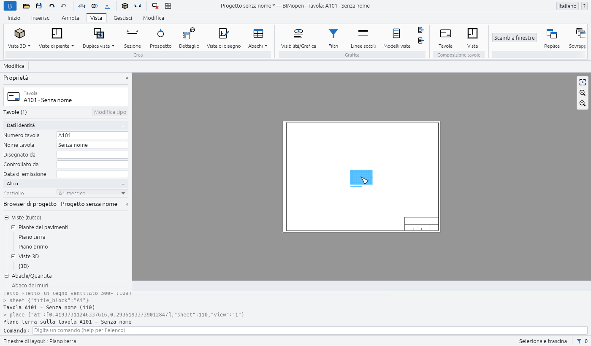

Primi passi
Questo capitolo mostra come avviare BIMopen sul desktop e nel browser, che cosa contiene il progetto di esempio e come modellare una prima piccola casa: quattro muri, una porta, una finestra, un pavimento, un tetto, una vista 3D e una tavola con la pianta. Richiede circa dieci minuti.
Avviare BIMopen sul desktop
BIMopen si compila dal suo codice sorgente con Rust, versione 1.90 o successiva. Su Linux l'interfaccia grafica richiede anche i file di sviluppo di xkbcommon, Wayland e GTK 3.
sudo apt-get install -y libxkbcommon-dev libwayland-dev libgtk-3-dev # Debian, Ubuntu
cargo run --release -p bimopen -- --sample # opens the sample house
Il programma è bimopen. Accetta un file da aprire e un'opzione:
| Comando | Che cosa apre |
|---|---|
bimopen |
Un progetto nuovo, vuoto |
bimopen --sample |
La casa di esempio |
bimopen house.bimopen |
Il progetto salvato in house.bimopen |
Puoi aprire un progetto anche trascinando un file .bimopen dal gestore dei file nella finestra.
Lingua e tema
La prima volta, BIMopen parla la lingua del sistema operativo quando è una delle sue sei lingue (italiano, inglese, tedesco, francese, spagnolo, arabo), altrimenti l'inglese. Per cambiarla, usa il menu della lingua all'estremità destra della barra del titolo (il globo con il nome della lingua), oppure Menu dell'applicazione ▸ Opzioni ▸ Lingua. L'interfaccia cambia subito.
In Opzioni scegli anche il Tema, Chiaro o Scuro, e se lo sfondo delle viste è invertito (Inverti colore sfondo: viste scure con linee chiare). Scegliere il tema scuro inverte anche lo sfondo; puoi disattivarlo di nuovo. BIMopen ricorda la lingua e il tema per la volta successiva.
Avviare BIMopen nel browser
La versione web è lo stesso programma, compilato per il browser. Apri atsanna.github.io/bimopen-site/app/: si avvia con la casa di esempio. Non occorre installare nulla, e il progetto resta nel tuo browser: non viene inviato da nessuna parte.
L'indirizzo accetta queste opzioni, che si possono combinare con &:
| Indirizzo | Effetto |
|---|---|
app/?lang=de |
Apre in tedesco per questa visita (it, en, de, fr, es, ar) |
app/?empty |
Si avvia con un progetto nuovo, vuoto, invece dell'esempio |
app/?webgl |
Disegna con WebGL2 anche dove WebGPU è disponibile |
Il browser deve supportare WebGPU o WebGL2. Nel browser alcune cose funzionano in modo diverso:
- Apri… non può mostrare una finestra di dialogo dei file: trascina un file
.bimopennella pagina per aprirlo; - Salva e le esportazioni scaricano il file, con il nome del progetto.
Per compilare tu stesso la versione web:
cargo xtask web # builds dist/web
python3 -m http.server 8080 -d dist/web # then open http://localhost:8080
cargo xtask web richiede il target wasm32-unknown-unknown di Rust e il comando wasm-bindgen
della versione indicata in Cargo.lock; con wasm-opt di binaryen installato, il risultato è
più piccolo.
Il progetto di esempio
La casa di esempio mostra la maggior parte di ciò che BIMopen sa fare. Aprila con Menu
dell'applicazione ▸ Progetto di esempio, con bimopen --sample, oppure digitando sample alla
riga di comando.

Contiene:
- due livelli, ciascuno con la sua pianta, e cinque linee di griglia;
- quindici muri di quattro tipi, con strati, uniti agli angoli;
- sei porte e dodici finestre, etichettate nelle piante;
- due pavimenti, un tetto a falde, una scala con le sue ringhiere e una facciata continua a vetrina;
- arredi e sanitari, otto locali colorati per destinazione d'uso, con una legenda;
- una sezione, un prospetto, una pianta delle aree, una vista 3D salvata e una vista di disegno con un dettaglio del muro;
- quote, note di testo e gli abachi di muri, porte, finestre, locali e materiali.
Tip
L'esempio è un buon posto per provare uno strumento prima di usarlo sul tuo progetto: un nuovo esempio è sempre a un clic di distanza, e nulla di ciò che vi cambi viene salvato a meno che tu non lo salvi.
La tua prima casa
I passaggi seguenti partono da un progetto vuoto e finiscono con una tavola. Ogni passaggio indica il pulsante su cui fare clic; il capitolo sull'interfaccia spiega ogni parte della finestra.
1. Crea un nuovo progetto
- Fai clic sul pulsante blu B all'estremità sinistra della barra del titolo: si apre il menu dell'applicazione.
- Fai clic su Nuovo.
Il nuovo progetto ha due livelli, Piano terra e Piano primo, una pianta per ciascuno e la vista 3D predefinita. Non ha ancora muri. I suoi tipi di muro, porta, finestra, pavimento e tetto sono pronti all'uso.
2. Apri la pianta del piano terra
Nel Browser di progetto, sotto Viste (tutto) ▸ Piante dei pavimenti, fai doppio clic su Piano terra. La pianta si apre nell'area di disegno e la barra del titolo mostra Pianta: Piano terra.
Note
Un solo clic su una vista nel Browser di progetto ne mostra le proprietà nella tavolozza Proprietà senza aprirla. Un doppio clic la apre.
3. Disegna quattro muri
- Fai clic su Inizio ▸ Costruisci ▸ Muro. La barra multifunzione passa alla scheda contestuale Modifica | Posiziona Muro, la barra delle opzioni mostra le impostazioni del muro e Proprietà mostra il tipo del prossimo muro, Muro esterno - Laterizio 300 + cappotto.
- Sulla barra delle opzioni, attiva Orto (Shift): i muri restano orizzontali o verticali.
- Fai clic nella pianta dove va il primo angolo. La riga di comando chiede il punto successivo:
WALL next point [Esc to finish]:. - Fai clic sul secondo, terzo e quarto angolo. Mentre muovi il mouse, la lunghezza e l'angolo del muro che stai disegnando sono mostrati accanto a esso.
- Fai di nuovo clic sul primo angolo: i quattro muri sono uniti agli angoli.
- Premi Esc per interrompere la catena, e di nuovo Esc per terminare lo strumento.

Tip
Puoi disegnare gli stessi muri digitando i loro angoli in metri:
wall 0,0 10,0 10,6 0,6 c. La c finale chiude la catena. Vedi
Riga di comando e MCP.
4. Aggiungi una porta e una finestra
- Fai clic su Inizio ▸ Costruisci ▸ Porta, poi fai clic su un muro dove va la porta. La
porta viene inserita nel muro, che viene tagliato intorno a essa. La riga di comando lo
conferma:
Door «Single swing door 80x210» in wall …. - Premi Esc: lo strumento termina e la barra multifunzione torna alla scheda Inizio.
- Fai clic su Inizio ▸ Costruisci ▸ Finestra, fai clic su un altro muro e premi Esc.
Una porta o una finestra si può inserire solo in un muro: dopo un clic lontano dai muri, la riga
di comando risponde no wall at that point e non viene inserito nulla.
5. Aggiungi un pavimento e un tetto
- Fai clic su Inizio ▸ Costruisci ▸ Pavimento. La scheda contestuale Modifica | Crea contorno pavimento ha un gruppo Disegna con due modi di creare il pavimento: Linee di contorno, punto per punto, oppure Seleziona muri.
- Fai clic su Seleziona muri: viene creato un pavimento sul perimetro esterno dei muri del livello, e la riga di comando ne indica l'area.
- Fai clic su Inizio ▸ Costruisci ▸ Tetto. Sulla barra delle opzioni scegli la forma (Due falde, Padiglione o Piano), l'Inclinazione (30° come predefinito) e la Sporgenza (500 mm come predefinito).
- Fai clic su Seleziona muri nel gruppo Disegna: il tetto copre i muri del livello, con la sporgenza tutto intorno.

6. Guardala in 3D
Fai clic sul pulsante Vista 3D (il cubo) nella barra di accesso rapido. Si apre la vista 3D predefinita, {3D}. Trascina con il pulsante destro del mouse (oppure con Shift e il pulsante centrale) per orbitare, trascina con il pulsante centrale per spostare la vista, e ruota la rotella per lo zoom; il pulsante sinistro seleziona, come nelle piante. Home adatta l'intero modello alla vista.

7. Metti la pianta su una tavola
- Fai clic sulla scheda Vista, poi su Composizione tavole ▸ Tavola. La finestra di dialogo Nuova tavola elenca i cartigli: nessuno, A0, A1, A2 o A3, con le loro dimensioni in millimetri.
- Fai clic su OK. La tavola viene creata con il numero libero successivo (A101 per la prima, poi A102…) e si apre.
- Fai clic su Composizione tavole ▸ Vista. La finestra di dialogo Viste elenca le viste che non sono ancora su una tavola.
- Scegli Pianta: Piano terra e fai clic su Aggiungi vista alla tavola. La pianta viene posizionata sulla tavola alla sua scala, 1 : 100, come finestra di layout, che resta selezionata.

8. Annulla, ripristina e salva
- Ctrl+Z annulla l'ultima modifica (qui, la finestra di layout scompare); Ctrl+Y la ripristina. Le frecce della barra di accesso rapido fanno lo stesso.
- Ctrl+S salva il progetto. Un progetto mai salvato chiede prima un nome di file; il file ha
l'estensione
.bimopen. Nel browser, il file viene scaricato.
La barra del titolo mostra un asterisco dopo il nome del progetto finché ci sono modifiche non salvate: Progetto senza nome *.
E adesso
- L'interfaccia descrive ogni parte della finestra.
- Scorciatoie da tastiera elenca i tasti e le scorciatoie di due
lettere, come
WAper un muro. - Riga di comando e MCP mostra come digitare comandi, eseguire script e lasciare che un agente modelli per te.